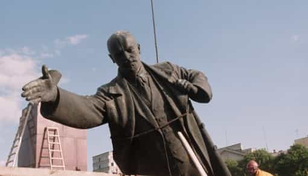

< < < Back
Why Communism Doesn’t Work – Return Of Kings
An economy is a method of distribution of scarce resources. I should make it clear that an economic system is basically a Platonic ideal form existing in the realm of pure theory; real-world results will differ. Theories grounded in reality get fairly good results; others will be disastrous. Further, corruption happens in any sort of system and drags it down. If tolerated and extensive, corruption eventually reaches the government and alters the system.
Although no system is perfect, we should strive to improve what we have and reduce corruption. That being said, we’ll explore why Communism failed to fulfill its glowing promises.
Marx’s fairy tales
“Hey, man, got any spare change?”
With socialism, the means of production—factories, farms, and other workplaces—are partially or fully publicly owned. At the most extreme, everyone works for the government. In some varieties, private land doesn’t exist. In some cases, no private property exists; everyone owns everything. Communism is a hardline variety with the goal of worldwide revolution.
As the theory goes, the workers of the world (“have-nots”) would unite and overthrow the aristocrats (“haves”) and bourgeoisie (“have a little, want more” as Saul Alinsky put it). Bourgeois means middle class; for some reason, Marx hated them more, even though they weren’t exploiters running sweat shops. After “spreading the wealth around” (as The Lightworker put it), the formula “from each according to his ability, to each according to his needs” would settle who works what jobs and who benefits from other people’s labor.
After the dust settles, socialism will—so the theory goes—transform into “true Communism”. Then, everyone would share everything, and whatever you need would be available as easy as breathing. Eventually, the apparatus of the state would wither away, leaving basically a global utopia without a government.
A few problems appear already. Having your material needs fulfilled effortlessly seems like something from a South Pacific cargo cult. Their notorious dictatorial police states certainly didn’t fade away. Further, despite similar end goals, Communists and anarchists didn’t get along so well.
The rejoinder by the True Believers is that “Communism has never been implemented properly”. That’s like saying a pyramid scheme is a great idea but it’s never been done right. It seems rather odd that dozens of Communist regimes across the globe, many lasting decades, never made it work. All of them sucked; it was simply a matter of how much they sucked.
How Communism really works (not)
Polish citizens standing in line for toilet paper rations
The economic planners tasked with implementing Marx’s goofy theories faced some problems. They had to devise explanations fitting the theory, such as “We must build more industry before our society will be at the correct stage to start transitioning to true Communism.” Trying to make it all work was trickier yet.
In a capitalist economy, scarcity is moderated by price. The rarer a product is (and the more in demand), the costlier it becomes; those who can’t afford it must find a cheaper substitute or do without. In a socialist economy, scarcity is moderated by rationing. That might sound attractive in theory to some. Those who’ve lived the experience know better. Waiting in a toilet paper ration line for a couple hours (and hopefully supplies don’t run out by the time it’s your turn) is pretty instructive. If you want more than what your ration allows, tough luck. I might add that people spending hours in line to get basic supplies isn’t a productive use of their time. Despite Marx’s wishful thinking, there’s no avoiding scarcity.
Industries had quotas to fulfill, or else. Shoddy Soviet manufacturing standards were legendary, from workers rushing to meet monthly goals. Still, production often didn’t meet quota, so they had to doctor the statistics. When failure was admitted, sabotage and careless low-level management was blamed, but never the system itself. Other than that, if products were inferior, there weren’t many alternatives.
In societies with market economies, we pursue our jobs diligently so that we might one day be rich. In socialist countries, they’re told to pursue their jobs diligently for the good of the country. Guess what will be a better motivator? Pay was low, and finding goods was often difficult from frequent shortages. As the joke went, “They pretend to pay us, and we pretend to work.”
All told, the command economy was a big mess. Central planning was cumbersome and worked badly, even for small countries. They emphasized full employment for the public, but labor was allocated inefficiently, often make-work situations such as several people assigned to a job easily handled by one. A market economy’s “invisible hand” corrects prices and employment. Even despite some flaws, self-regulation works better than micromanagement.
Science was sluggish in many areas. Capitalism incentivizes technological development, as companies want consumers to keep buying new products. (That’s actually taken a bit too far; for example, people don’t really need to upgrade their cell phones every year and throw away perfectly good ones, even though the manufacturers sure want us to do that.) In Communism, central planning manages research too, coming down to a matter of priorities. The USSR pushed military development and had a top-notch space program. However, their biology program suffered badly because of Lysenko’s theories pushing the politically correct “social construction” line.
Finally, Communist Party members made themselves a privileged class, with better employment and better access to rationed goods. Hedrick Smith estimated that only ten percent of Soviet Communist Party members really believed in it; the rest were in it for the perks. It doesn’t bode well for an ideology when most of the ruling party knows it’s bullshit.
Inefficiency
Bloated bureaucracy was one drain on the system, and inventory shrinkage was another. If Communism means that everyone owns everything, why not steal? Here, pilfering office supplies makes for a good Dilbert cartoon, but in the USSR, that sort of thing was normal despite being strictly forbidden. For example, sides of beef from Siberia destined for Moscow would get whittled down at each train station. Padlocking the boxcars didn’t seem to help; the keys got around. Even Brezhnev acknowledged that petty corruption was how people got by.
Their emphasis on hyper-preparedness and exporting revolution turned out to be detrimental. They could have done better without all that. A large chunk of American national debt has been due to wasteful spending on behalf of the military-industrial complex for the arms race and fighting spit-in-your-eye wars. Still, the Soviet economy got it far worse, with a much higher ratio of defense to gross domestic production. The arms race ultimately drove the first nail into the USSR’s coffin.
Grandiose projects became huge boondoggles. The “Virgin Lands” project was a massive effort to cultivate wilderness areas. Unfortunately, the weather didn’t cooperate. Mao Zedong’s “Great Leap Forward” effort promised to turn farming villages into steel mills, though the peasants didn’t have the supplies or experience. Tens of millions starved because they relied on goofy new agricultural ideas to boost farm production, which didn’t work. They could’ve avoided trouble with small test projects to document accurately how well things worked and what problems they might encounter. Later, Khrushchev and Chairman Mao had to admit they were wrong. That’s much more honest than today’s leftists who deny that their social engineering policies failed and then double down on them.
The Ryugyong Hotel’s construction ate up 2% of North Korea’s GDP while the people were dying of starvation. Shoddy cement work made the building unsafe, becoming an uninhabited, half-finished eyesore towering over Pyongyang. An Egyptian company later added windows and antennas; now it’s the world’s most expensive cell phone tower. The concept was half-baked anyway; they expected foreigners to book huge business conferences there, but who the hell would do that in North Korea? Silly Norks!
In practice, compromises sometimes were necessary, such as allowing limited private enterprise. That worked in Yugoslavia, but one guy I know left there because he was sick of paying 90% taxes. Another example is Lenin’s New Economic Policy. It worked better than complete Communism (which caused dreadful food shortages) but was plagued with corruption, considerably worse than what the Communists were complaining about before the Russian Revolution. (Ayn Rand’s We, the Living illustrated how dysfunctional both systems turned out.) Later, the “NEPmen” got thrown under the bus. So it was back to collective farming and grain quotas, but the weather doesn’t always agree, leading to further consequences.
Repression
Dissent must be suppressed to prevent a counterrevolution. Thus, Communist countries have a rather lousy human rights record. The usual double standard applies: leftists (even moderates) are notorious for overlooking Communist repression, while magnifying atrocities of rightist regimes. A prime example was useful idiot journalist Walter Duranty’s reporting on the planned starvation in Ukraine, dismissing it as a “big scare story”. The estimated death toll was seven to ten million, but you don’t hear much about them these days.
Heavy-handed propaganda (milieu control) keeps the citizens in line, giving them a skewed view of the rest of the world. It was very difficult to emigrate or just travel abroad. In the USSR, even travel between the regions was controlled, leaving many to believe that lousy conditions were only a local problem. North Korea tells its citizens that they’re the happiest country in the world. They say Americans are starving and survive on snow and pheasants, quite unaware of our obesity problem. North Korea’s only obesity problem is their tin-pot dictator, whose appetite singlehandedly causes food shortages.
Communism metes out draconian penalties for dissent, even for getting caught telling a political joke. Large networks of informers rat out others for bad attitudes, and people don’t know who to trust. Quite remarkably, in East Germany, a third of the population participated in this. When Stasi archives were made public, it created some rather frosty relations; many discovered that one of their “friends” or neighbors had snitched on them, the smallest penalty being denial of job opportunities. Dissent is a good thing; it lets the leaders know when they’re making mistakes.
Can Communism ever work?

The only time that communal ownership of property proved workable is in religious orders and low-tech tribes. In practice, there likely would be consequences for grabbing items from another monk’s cell, or taking away another warrior’s spear. Also, neither monasteries nor primitive tribes had much use for slackers. It’s a proof of concept, but only in very limited circumstances; still far from fulfilling Marx’s hare-brained dreams.
Note that all these were small, very tightly-knit societies. If your job was chipping flint into spearheads, you gladly did so because this contributed to your survival as well as that of your tribe; your extended family. However, if you’re in a factory making toilet paper for everyone from Leningrad to Vladivostok—getting paid shit wages, and you can’t buy shit with it anyway—you might not really give a shit.
In fact, Americans tried it before. There were a couple of experiments in early colonial times, but the hard-working farmers were resentful that they got the same reward as the lazy ones, and so the project was abandoned. The United Order by early Mormon pioneers fizzled out. Hippie communes tended not to last long. If those little communities with shared values couldn’t get it to work, there’s no way it would really produce universal prosperity in a modern country, much less globally.
The end (not)

Would you buy a used car from this bozo?
Gorbachev introduced restructuring and openness, attempting to reform the system. The legislature was no longer a rubber stamp for the Politburo, and the expansive rights guaranteed by the Soviet constitution were finally granted for real. As soon as the citizens could speak their minds and vote themselves out of Communism, they did so. When the dysfunctional narrative collapsed, it wasn’t long before the Lenin statues came down; a hopeful sign for our situation today.
The story isn’t over yet. Just as the USSR was collapsing, cultural Marxism was taking over elsewhere. Political correctness seemed merely petty language policing and silly hypersensitivity. Unchecked, it became much more than that, and “Communism Lite” is now a totalitarian orthodoxy.
The Western world prides itself on freedom, but we’ve fallen backward. The American domestic spying program, enjoying the collusion of many countries abroad, would’ve made Comrade Andropov weep with envy. Today, people are ostracized or harassed for expressing politically incorrect opinions. In many “free” countries, you can be jailed for that, or for discussing forbidden historical narratives. Huge corporations enthusiastically participate in the spying, along with online censorship.
It may well end up worse. The Communists were trying to develop their countries constructively, though stuck within a dysfunctional economic system’s parameters. Cultural Marxism, on the other hand, was intended to wreck society, and it’s doing so. The only good news is that it isn’t as heavy-handed with the repression (yet).
The KGB stopped pushing ideological subversion, but a group of powerful, ultra-wealthy champagne Socialists co-opted the leftist narrative. They manipulate a hive of useful idiots to implement progressive “Communism Lite” policies. They live like sultans, intending the rest of us to be their docile peasants. They want capitalism for themselves (with the utmost results), and want socialism for the rest of us (and not the fairy tale version).
Ultimately, that’s what Marx’s theories led to, empowering the aristocrats he opposed. The moral of the story is, never believe the economic theories of some pseudo-intellectual drunken bum who never worked a day in his life. Communism is for the broadly overlapping categories of rabbit people, those who are ignorant of history, and rebels without a clue.
Read More: It’s Time To Go Beyond The “Capitalism Vs. Socialism” Dichotomy